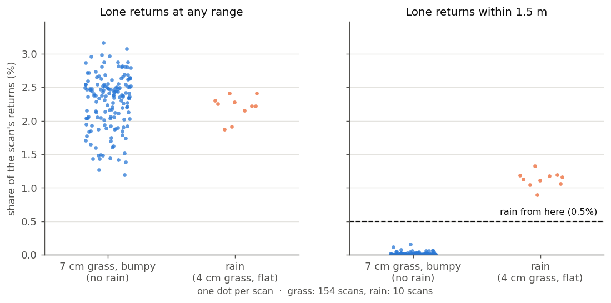

Is the lidar telling the truth?
Every safety check so far trusts the lidar: it stops for the dog, the drop and the steep bank because the lidar saw them. This project's first rule says the lidar is the sensor we believe. So we have to know when it's lying: a muddy window, water on the lens, rain, a driver that hangs. This post adds that check, and breaks the simulated lidar five ways to test it.
What a healthy scan looks like
On a lawn, the lidar's lower beams always hit the ground within a couple of metres, and every one of them comes back. The robot checks every scan for five things:
- Returns. In each of eight slices around the robot, the share of ground beams that came back. Mud or water on the window loses them.
- The window. Returns closer than 10 cm. Nothing real is that close, so it's on the window.
- Speckle. Lone points close to the sensor, with nothing around them: raindrops.
- Frozen. The same scan three times: a driver that hung and keeps resending its last frame.
- Silent. No scan for half a second.
A problem has to show up in three scans in a row (one bad scan is a bird). Then there are two levels:
- Degraded (half the window wet, rain): slow to 0.2 m/s, blade off, drive home, and wait there for the owner.
- Failed (a blind slice, a frozen or silent sensor): stop where it is, blade off, and wait for the owner.
The robot never carries on with a lidar it doesn't trust, and it never hands over to the camera. That was decided at the start of this phase: a degraded lidar is a fault, not the camera's turn.
Breaking it on purpose
A small program now sits between the simulated lidar and everything that reads it. Sixty seconds into a mow it breaks the picture, one of five ways:
| Fault | What it does to the scan |
|---|---|
| smudge | mud over the front: every beam within 45° of straight ahead returns from 3 cm |
| wet | water on the window: half the beams, at random, return nothing |
| rain | 4% of beams hit a drop somewhere 0.3 to 3 m out |
| freeze | the same scan, over and over, with new timestamps |
| silent | nothing at all |
Each fault ran in its own mow of the simulated lawn's open patch, in 4 cm grass, with the robot driving at full speed when the fault hit:
| Fault | Seen after | Level | What the robot did |
|---|---|---|---|
| smudge | 0.21 s | failed | stopped in 0.14 s, blade off, stayed put |
| wet | 0.25 s | degraded | blade off, home at 0.20 m/s, docked |
| rain | 0.33 s | degraded | blade off, home at 0.20 m/s, docked |
| freeze | 0.20 s | failed | stopped in 0.11 s, blade off, stayed put |
| silent | 0.47 s | failed | stopped in 0.14 s, blade off, stayed put |
All five pass every check: no false alarm in the minute before the fault, seen within a second, the right level, not one blade command let through after it, and the mission ended with the right reason for the owner. (That's the sixth series. The first five found the problems below.)
Grass looks like rain, until you ask how far away
The first version said a raindrop is a lone point, with no neighbours. The first test run on the bumpy lawn read as rain from its very first scans. In 7 cm grass, 2–3% of the lidar's returns are lone points: the edges of tufts, fence posts, things far off.
The next idea was that a tuft is still there in the next scan, and a drop isn't. That one passed the unit test and then missed the simulated rain completely. The robot stopped for the drops as if they were obstacles: safe, but it never knew it was raining. With 11,000 points a scan, nearly every drop has some point from the last scan close enough to it, once you allow for the robot turning between scans. It hid 88% of the rain.
So we recorded the lidar's raw scans from two sim runs and looked. The lone grass points are far away. Within 1.5 m of the sensor, grass is dense and almost never alone. Raindrops are right there:

Within 1.5 m, grass peaked at 0.16% and rain started at 0.89%, so the line is at 0.5%.
Tilted on the mound
The other false alarm came from the bumpy lawn's mound. The check expected a fixed set of beams to hit the ground: the ones that do on level ground. On the mound the robot was tilted 10.8° nose up and 6.2° to one side. On the raised side, the lowest beams pointed over the ground, and the check read it as a lidar that had lost 22% of its returns. It sent the robot home.
The robot knows its own tilt from its motion sensor, and the drop check already uses it. Now the health check chooses its ground beams the same way. The same scan, replayed with the robot's tilt, reads 100% in every slice.
Rain stopped it on the way home
Once rain was detected, the robot did the right thing (blade off, slow, head home) and then stopped for the rain itself. Raindrops 30 cm to 1 m ahead, 10 cm up, look like a small obstacle to the safety gate. With new drops in every scan, the way never cleared, and the robot gave up short of the dock.
Two fixes, both about what a raindrop is:
- A lone point close by isn't a thing. The beams are 2° apart vertically and 0.5° apart around. Anything solid within 1.5 m covers more than one of them: a hose 1 m out covers dozens. So a lone return that close is something under about a centimetre across. Those points are now dropped before the gate looks for obstacles, rain or not.
- In rain, an obstacle has to still be there. Some drops land beside another return, so they aren't alone, and three of them can make a "cluster". While the lidar reports rain, an obstacle point only counts if the previous scan, a tenth of a second earlier, had one within a few centimetres. A box is still there; a drop isn't. In the recorded rain, about 55 drops per scan landed in the robot's path, and about 2 of them passed that test. Dry, nothing changes.
The same "is it still there next scan?" idea failed for detecting rain, earlier. It works here because it's applied to a few dozen candidate obstacle points, not the 11,000 points of the whole scan.
What else broke on the way
- Ghosts from an old run. A test run killed by hand left eleven of its programs running, among them its own lidar-breaking program and the simulated GPS noise. They quietly joined every later run. Every test run got a smudge on top of its own fault, and the clean control run's clock jumped backwards 622 times and the robot never moved. The clean-up script now kills them too.
- A crash in the safety gate. Writing the same log line as "info" one time and "warning" the next is something the robot's software framework refuses to do, and the gate crashed in the middle of a run. Two separate log lines now.
- The report couldn't tell time. The blade command has no timestamp of its own. The report now orders blade commands against the gate's own alarm, which is exact.
Did it break anything?
- The bumpy lawn (7 cm grass, the one that cried rain and sent the robot home): mowed 97.3% and finished, no lidar alarm, no false stops.
- The slope patch: mowed 98.1%, no lidar alarm, though it tilts the robot up to 7°.
- The obstacle course, which matters most here because lone points are now thrown away: on bare ground every obstacle is still stopped for, the 10 cm hedgehog and the 4 cm hose included, with 56–58 cm to spare. In 7 cm grass, everything but the hose, the same as before: the hose is shorter than the grass.
Not covered yet
- The dock as a known target. At every docking the dock sits at a known distance and bearing. A mismatch would mean a knocked or dirty sensor. Not built yet.
- Real weather. Simulated rain is uniform random drops. Real rain, mist, dust and grass clippings won't be, and the 0.5% line is a starting point for the real lawn.
- Next: things that move. A dog walking across the lawn isn't a fault and isn't a fixed obstacle either. That's 5.2.